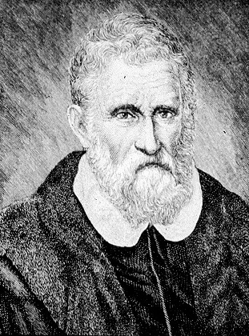
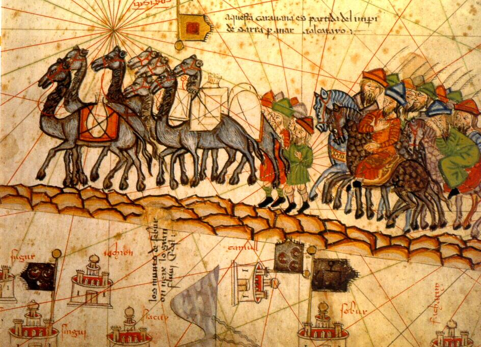

What happens when a seventeen-year-old merchant leaves Venice and spends nearly a quarter of a century traveling across the largest empire in human history? You discover mulberry paper that functions as gold, black stones that burn like wood, and a postal courier system faster than ocean galleys.
Big idea: Marco Polo’s 24-year overland and maritime journey opened European minds to Asian technology, economy, and urban organization. His book, Il Milione, introduced the West to fiat currency, coal energy, and the vast scale of Eurasian trade networks.
45–60 minutes · Predict → investigate → explain
Classroom route atlas · Original schematic
Follow the solid gold line for the 1271–1275 outbound overland journey across Persia, the high Pamir Mountains, and the Taklamakan Desert to Shangdu and Khanbaliq (Beijing). Follow the cyan dashed line for the 1291–1295 maritime return through the South China Sea, Sumatra, Sri Lanka, and the Indian Ocean.
ClassroomOS original illustration. Waypoints and sailing corridors are approximate educational schematics based on manuscript traditions of The Travels of Marco Polo.
01 / Before the departure
What must we know first?
Venetian merchants and the Pax Mongolica
In 1271, Venice was a thriving maritime republic dominating Mediterranean maritime trade. Marco Polo set out with his father Niccolò and uncle Maffeo, who had already traveled to the Mongol court once before. The vast territories between the Black Sea and the Pacific were united under the Mongol Empire.
This unified political control created the Pax Mongolica (Mongol Peace). For a brief century, merchant caravans, diplomats, and pilgrims could travel 5,000 miles across Eurasia with unprecedented safety, carrying a paiza—a bronze or silver tablet acting as an imperial passport.
Known to whom?
To Europeans, China was a mysterious semi-mythical land named "Cathay." But the Yuan Dynasty was one of the most technologically advanced and densely populated civilizations on Earth. Cities like Hangzhou and Khanbaliq held populations exceeding one million people at a time when London or Paris held barely 50,000.
Printing, paper currency, magnetic compasses, gunpowder, porcelain, and coal metallurgy were already fully integrated into daily life. Marco Polo was not introducing Europe to an uncharted wilderness; he was documenting an urban, industrial superpower.
The journey was a network of cultures
Kublai Khan (1215–1294)
Grandson of Genghis Khan and founder of China’s Yuan Dynasty. Kublai Khan was a pragmatic ruler who employed talented foreigners—Muslim financiers, Persian engineers, Tibetan lamas, and European merchants—to administer his diverse empire without relying solely on traditional Confucian aristocrats.
Rustichello da Pisa
A romance writer imprisoned alongside Marco Polo in a Genoese jail after a naval battle in 1298. As Polo recounted his travels from memory, Rustichello recorded them in Franco-Italian prose, blending merchant precision with chivalric storytelling flare.
Princess Kököchin
A 17-year-old Mongol princess betrothed to the ruler of the Ilkhanate in Persia. When overland roads became dangerous due to dynastic civil wars, the Polos were chosen to escort her on an epic two-year voyage aboard a fleet of 14 giant ocean-going junks across the Indian Ocean.
Silk Road caravaneers and interpreters
Caravans required hundreds of camel drivers, horse wranglers, water scouts, translators, and armed guards. Surviving deserts like the Taklamakan ("Place of No Return") depended on indigenous oasis communities maintaining wells and qanat irrigation networks.

Historical Portrait · Galleria dei Ritratti
Marco Polo (c. 1254–1324). Venetian merchant and traveler. His accounts provided Europe with its first comprehensive description of the geography, culture, cities, and economic systems of medieval Asia.
Galleria dei Ritratti / Wikimedia Commons · Public domain.

Cartographic Masterpiece · Abraham Cresques, 1375
The Silk Road in the Catalan Atlas. Produced in Majorca in 1375 for King Charles V of France, this celebrated illuminated world map incorporated Marco Polo’s place names, portraying a merchant caravan crossing Central Asia with camels, flags, and compass stars.
Bibliothèque nationale de France (BnF) / Wikimedia Commons · Public domain.
First action: Select each stage. Identify one challenge of logistics, language, or politics that changed the traveler’s route.
Track the survival statistics of the expedition
Departure from Venice (1271): 3 Polos (Niccolò, Maffeo, Marco) plus two Dominican friars carrying papal letters. The friars turned back in Cilician Armenia due to local warfare; only the three Polos pressed on.
Arrival at Shangdu (1275): All three Polos survived the 3.5-year overland crossing. Marco learned four languages and the Mongol script, entering government service.
The Sea Return (1291–1293): The fleet departed southern China with 14 ships and over 600 passengers and crew. Ravaged by typhoons, tropical fevers, and pirate skirmishes during a five-month layover in Sumatra, only 18 passengers survived the voyage to Persia, including the three Polos and Princess Kököchin.
Return to Venice (1295): Arriving in Venice after 24 years, dressed in tattered Mongol robes, their relatives initially refused to recognize them until they slit open their seams, pouring out rubies, emeralds, and diamonds.
Overland travel under imperial protection was safer than medieval ocean voyaging, where storms, scurvy, and tropical diseases exacted catastrophic human tolls.
03 / STEAM is a set of practices
The merchant’s analytical toolkit
Science · Combustible rocks and petroleum
Marco observed natural resource exploitation unknown in Europe: fountains of crude oil in Baku used for medicine and lamp oil, combustible "black stones" (coal) mined from mountains that burned hotter and longer than firewood, and asbestos mineral fibers woven into napkins that were cleansed by throwing them into fire without burning.
Technology · Magnetic compasses & bulkheads
In the Indian Ocean and South China Sea, Marco described multi-masted Chinese junks built with up to thirteen watertight bulkhead compartments. If a reef or whale breached the hull, water entered only one compartment, preventing the ship from sinking—an engineering technique European shipbuilders did not adopt until the 19th century.
Engineering · The Grand Canal network
Marco marvelled at the engineering of the Grand Canal, which connected the Yangtze agricultural heartland with the northern capital at Beijing. Flash lock gates, paved towpaths, and dredging operations coordinated the transport of millions of bushels of grain and tax goods across 1,100 miles of flatland.
Arts · Oral reporting and manuscript transmission
Marco kept careful mental notes on weights, measures, trade commodities, and court ceremonies. Dictated to Rustichello in prison, the text was copied by hand across Europe in hundreds of manuscript variations before the printing press existed, shaping European worldviews for centuries.
Mathematics · Fiat money and double-entry trade
Marco analyzed how Kublai Khan created an economy powered entirely by paper money (Chao) made from mulberry bark. He observed how the Khan fixed the exchange value against gold and silver bullion, establishing state credit through legal tender laws backed by capital punishment.
Economics lab: how does paper money work?
Predict: Why would merchants accept light mulberry paper in exchange for real gold, silk, and spices?
Kublai Khan’s paper money was the world’s first successful continental fiat currency. Its value depended on three things: imperial legal decree, state monopoly on precious metals, and mandatory acceptance for paying taxes.
Test: Lower the law enforcement and reserve backing. What happens to public confidence in paper currency? Explain: Why did Europeans at first refuse to believe Marco Polo when he claimed paper could purchase goods like gold?
Engineering decision: why use watertight bulkheads?
A merchant junk strikes an underwater rock in the Malacca Strait, tearing a hole in the forward hull. Choose the engineering reason the vessel stays afloat.
04 / A strange connection between horses and information
The Yam: medieval high-speed communication
How did an emperor rule a territory spanning 9,000 miles from Poland to Korea before telegraphs or radio existed? Through the Yam (Örtöö)—the Mongol Empire’s postal courier relay network.
Every 25 to 30 miles along major highways, the state maintained a relay station with 300 to 400 fresh horses and dormitories. Royal couriers rode at a full gallop, ringing bells as they approached a station so a replacement rider and fresh horse were saddled and waiting. Couriers could cover 200 to 250 miles in a single 24-hour day!
Network lab: information speed across Eurasia
Compare the time required to send a critical dispatch across 3,000 miles (such as from Beijing to Tabriz in Persia).
The logistical insight: The Yam was the internet of the thirteenth century. By distributing horses, feed, and lodging at precise physical intervals, information moved ten times faster than commerce, allowing imperial central command across an entire continent.
Evidence lab: did Marco Polo really go to China?
Some later critics questioned whether Marco Polo traveled to China or simply gathered merchant gossip in Black Sea ports. Evaluate the textual evidence.
Historical note on the Great Wall: The monumental stone wall visited by tourists today was built centuries later by the Ming Dynasty (1368–1644) to keep Mongols out! In Marco Polo’s time, the Mongols were the rulers inside China; earlier rammed-earth frontier walls had fallen into decay.
05 / Make your case
Keep a merchant’s ledger, then question it
Draw a comparative chart between medieval Venice and Yuan Dynasty China. Compare their energy sources, money, transportation, and communication systems. Separate an eyewitness observation (“the paper notes carry the Emperor’s vermilion seal”) from an embellishment (“the Great Khan’s palace has walls of solid gold”).
Core challenge
Explain how two STEAM practices (such as network relay mathematics and metallurgical coal combustion) transformed Eurasian societies. Include one calculation from the communication lab.
Stretch challenge
Christopher Columbus heavily annotated his personal Latin copy of Marco Polo’s travels when planning his 1492 westward voyage. Explain how Marco Polo’s estimates of Asia’s vast eastward width contributed to Columbus’s miscalculation of Earth’s ocean distances.
History and consequences
When Marco Polo died in 1324, a priest urged him to recant his "exaggerations" and confess his lies on his deathbed. Marco famously replied: "I have not told half of what I saw!" How did European skepticism reflect an inability to imagine civilizations more technologically advanced than their own?
Teacher notes and exit-ticket answers
Suggested pacing: foundations 10 min; journey and route 10 min; economics & bulkheads 15 min; Yam communication speed 10 min; ledger reflection 10 min. At 3,000 miles, standard caravans require ~150–200 days, whereas the Yam courier relay delivers a message in ~12–15 days. Watertight bulkheads compartmentalize damage. Marco Polo's omission of the stone Great Wall is explained because the iconic stone masonry was constructed under the Ming dynasty after Polo's era.
Cross-reference Polo’s descriptions with Chinese historical annals at the Academia Sinica. Analyze how translation between Venetian dialect, Old French, and Latin altered details over centuries.